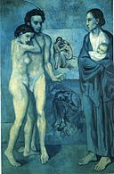

Take a general knowledge Picasso quiz before reading ahead!
Did Picasso predominantly do abstract work?
Answer is:
Was Picasso famous during his lifetime?
Answer is:
Picasso only ever did art in the form of painting
Answer is:
Introduction
Picasso demonstrated extraordinary artistic talent in his early years, painting in a naturalistic manner through his childhood and adolescence. During the first decade of the 20th century, his style changed as he experimented with different theories, techniques, and ideas. After 1906, the Fauvist work of the slightly older artist Henri Matisse motivated Picasso to explore more radical styles, beginning a fruitful rivalry between the two artists, who subsequently were often paired by critics as the leaders of modern art. Exceptionally prolific throughout the course of his long life, Picasso achieved universal renown and immense fortune for his revolutionary artistic accomplishments, and became one of the best-known figures in 20th-century art (Anonymous, 2019).
Blue Period
Picasso's Blue Period (1901–1904), characterized by sombre paintings rendered in shades of blue and blue-green, only occasionally warmed by other colours, began either in Spain in early 1901, or in Paris in the second half of the year. Many paintings of gaunt mothers with children date from the Blue Period, during which Picasso divided his time between Barcelona and Paris. In his austere use of colour and sometimes doleful subject matter – prostitutes and beggars are frequent subjects – Picasso was influenced by a trip through Spain and by the suicide of his friend Carlos Casagemas. Starting in autumn of 1901 he painted several posthumous portraits of Casagemas, culminating in the gloomy allegorical painting La Vie (1903) (Anonymous, 2019).

'La Vie' - 1903 ---- 'The Old Guitarist' - 1903
African Influenced Period
Picasso's African-influenced Period (1907–1909) begins with his painting Les Demoiselles d'Avignon. Picasso painted this composition in a style inspired by Iberian sculpture but repainted the faces of the two figures on the right of the painting after being powerfully impressed by African artefacts he saw in June 1907 in the ethnographic museum at Palais du Trocadéro. When he displayed the painting to acquaintances in his studio later that year, the nearly universal reaction was shock and revulsion; Matisse angrily dismissed the work as a hoax. Picasso did not exhibit Le Demoiselles publicly until 1916 (Anonymous, 2019).
'Les Demoiselles d'Avigon' - 1907
Analytic Cubism
Analytic cubism (1909–1912) is a style of painting Picasso developed with Georges Braque using monochrome brownish and neutral colours. Both artists took apart objects and "analyzed" them in terms of their shapes. Picasso and Braque's paintings at this time share many similarities (Anonymous, 2019).


'Girl with a Mandolin' - 1910 -- 'Portrait of Daniel-Henry' - 1910
As we can see through following the timeline of Picasso's work, it increasingly got stranger by conventional standards at the time. His work was indeed categorized as shocking and surrealist most of the time which is why he is now seen as such a significant artist. Picasso paved the way, alongside other artists, for others to be able to refuse to abide by the rules of conventional art and work in the abstract form if they so wished. In the modern world, it feels as though when the word 'abstract' is said, Picasso's paintings immediately come to mind but they are so much more than just an association, they are inspiring, educational, unique pieces of work. They provide the feeling of telling a story, each filled with emotion and events of its own taking you on a journey within each painting. For this, Picasso is a legend of the art world and the father of Modernism.
'The Weeping Woman' - 1937
Reference: Pablo Picasso. (2019, October 14). Retrieved from https://en.wikipedia.org/wiki/Pablo_Picasso.
Click to visit reference page for more information